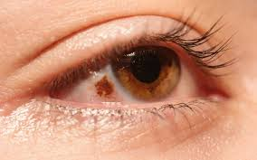
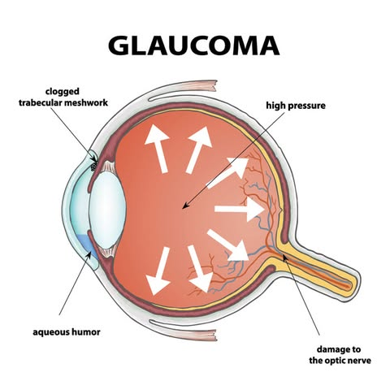

Eye Conditions and Diseases
Concerned about an eye infection or a serious condition? Read articles about the symptoms, diagnosis, and treatments for eye infections, eye diseases, and eye conditions.
Related Articles

What are cataracts?
A cataract is when your eye's natural lens becomes cloudy. Proteins in your lens break down and cause things to look blurry, hazy, or less colorful... Read More

Nevi—tiny flecks of pigment making their mark on your eye.
A nevus is a common, colored growth on or in your eye. Sometimes called a freckle of the eye, it is similar to a mole on your skin. A nevus is usually not harmful... Read More

What are the types of glaucoma?
Glaucoma is a group of eye diseases that can cause vision loss and blindness by damaging the optic nerve, the bundle of nerve fibers that connects the... Read More